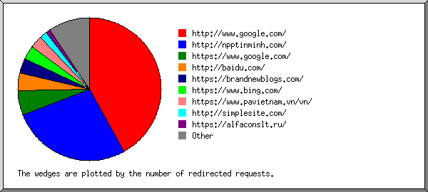
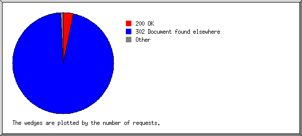
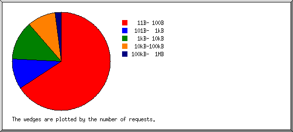
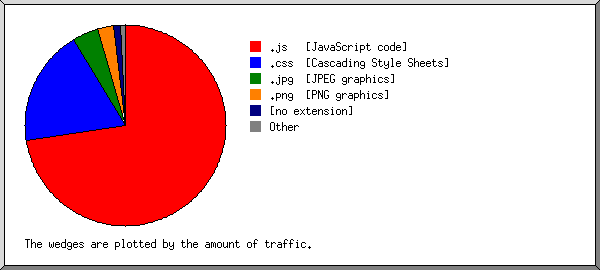
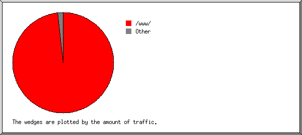

Web Server Statistics for npptinminh.com
Web Server Statistics for npptinminh.com
Program started on Sun, Sep 18 2022 at 8:21 PM.
Analyzed requests from Fri, Jul 10 2020 at 3:38 PM to Sun, Sep 18 2022 at 3:49 AM (799.51 days).
Web Server Statistics for npptinminh.comProgram started on Sun, Sep 18 2022 at 8:21 PM.
Analyzed requests from Fri, Jul 10 2020 at 3:38 PM to Sun, Sep 18 2022 at 3:49 AM (799.51 days).
(Go To: Top | General Summary | Monthly Report | Daily Summary | Hourly Summary | Domain Report | Organization Report | Redirected Referrer Report | Failed Referrer Report | Referring Site Report | Browser Report | Browser Summary | Operating System Report | Status Code Report | File Size Report | File Type Report | Directory Report | Request Report)
Figures in parentheses refer to the 7-day period ending Sep 18 2022 at 8:21 PM.
Successful requests: 353 (0)
Failed requests: 69 (0)
Redirected requests: 10,343 (2)
Distinct files requested: 135 (1,637)
Distinct hosts served: 7 (3,684)
Data transferred: 2.93 megabytes (0 bytes)
Average data transferred per day: 3.75 kilobytes (0 bytes)
(Go To: Top | General Summary | Monthly Report | Daily Summary | Hourly Summary | Domain Report | Organization Report | Redirected Referrer Report | Failed Referrer Report | Referring Site Report | Browser Report | Browser Summary | Operating System Report | Status Code Report | File Size Report | File Type Report | Directory Report | Request Report)
Each unit ( ) represents 1 request for a page.
) represents 1 request for a page.
| month | #reqs | #pages | |
|---|---|---|---|
| Jul 2020 | 138 | 0 | |
| Aug 2020 | 0 | 0 | |
| Sep 2020 | 17 | 0 | |
| Oct 2020 | 0 | 0 | |
| Nov 2020 | 0 | 0 | |
| Dec 2020 | 17 | 0 | |
| Jan 2021 | 0 | 0 | |
| Feb 2021 | 17 | 0 | |
| Mar 2021 | 0 | 0 | |
| Apr 2021 | 0 | 0 | |
| May 2021 | 17 | 0 | |
| Jun 2021 | 0 | 0 | |
| Jul 2021 | 17 | 0 | |
| Aug 2021 | 0 | 0 | |
| Sep 2021 | 0 | 0 | |
| Oct 2021 | 17 | 0 | |
| Nov 2021 | 0 | 0 | |
| Dec 2021 | 24 | 0 | |
| Jan 2022 | 0 | 0 | |
| Feb 2022 | 0 | 0 | |
| Mar 2022 | 24 | 0 | |
| Apr 2022 | 0 | 0 | |
| May 2022 | 24 | 0 | |
| Jun 2022 | 0 | 0 | |
| Jul 2022 | 0 | 0 | |
| Aug 2022 | 40 | 0 | |
| Sep 2022 | 1 | 0 |
Busiest month: Jul 2020 (0 requests for pages).
(Go To: Top | General Summary | Monthly Report | Daily Summary | Hourly Summary | Domain Report | Organization Report | Redirected Referrer Report | Failed Referrer Report | Referring Site Report | Browser Report | Browser Summary | Operating System Report | Status Code Report | File Size Report | File Type Report | Directory Report | Request Report)
Each unit () represents 1 request for a page.
| day | #reqs | #pages | |
|---|---|---|---|
| Sun | 17 | 0 | |
| Mon | 17 | 0 | |
| Tue | 17 | 0 | |
| Wed | 33 | 0 | |
| Thu | 65 | 0 | |
| Fri | 187 | 0 | |
| Sat | 17 | 0 |
(Go To: Top | General Summary | Monthly Report | Daily Summary | Hourly Summary | Domain Report | Organization Report | Redirected Referrer Report | Failed Referrer Report | Referring Site Report | Browser Report | Browser Summary | Operating System Report | Status Code Report | File Size Report | File Type Report | Directory Report | Request Report)
Each unit () represents 1 request for a page.
| hour | #reqs | #pages | |
|---|---|---|---|
| 0 | 0 | 0 | |
| 1 | 1 | 0 | |
| 2 | 0 | 0 | |
| 3 | 88 | 0 | |
| 4 | 0 | 0 | |
| 5 | 0 | 0 | |
| 6 | 0 | 0 | |
| 7 | 0 | 0 | |
| 8 | 0 | 0 | |
| 9 | 0 | 0 | |
| 10 | 0 | 0 | |
| 11 | 0 | 0 | |
| 12 | 0 | 0 | |
| 13 | 0 | 0 | |
| 14 | 0 | 0 | |
| 15 | 17 | 0 | |
| 16 | 0 | 0 | |
| 17 | 0 | 0 | |
| 18 | 0 | 0 | |
| 19 | 0 | 0 | |
| 20 | 0 | 0 | |
| 21 | 30 | 0 | |
| 22 | 96 | 0 | |
| 23 | 121 | 0 |
(Go To: Top | General Summary | Monthly Report | Daily Summary | Hourly Summary | Domain Report | Organization Report | Redirected Referrer Report | Failed Referrer Report | Referring Site Report | Browser Report | Browser Summary | Operating System Report | Status Code Report | File Size Report | File Type Report | Directory Report | Request Report)
Listing domains, sorted by the amount of traffic.
| #reqs | %bytes | domain |
|---|---|---|
| 353 | 100% | [unresolved numerical addresses] |
(Go To: Top | General Summary | Monthly Report | Daily Summary | Hourly Summary | Domain Report | Organization Report | Redirected Referrer Report | Failed Referrer Report | Referring Site Report | Browser Report | Browser Summary | Operating System Report | Status Code Report | File Size Report | File Type Report | Directory Report | Request Report)

Listing organizations, sorted by the number of requests.
| #reqs | %bytes | organization |
|---|---|---|
| 198 | 0.48% | 112 |
| 98 | 82.56% | 171.236 |
| 33 | 0.08% | 91 |
| 23 | 16.46% | 66.102 |
| 1 | 0.43% | 107 |
(Go To: Top | General Summary | Monthly Report | Daily Summary | Hourly Summary | Domain Report | Organization Report | Redirected Referrer Report | Failed Referrer Report | Referring Site Report | Browser Report | Browser Summary | Operating System Report | Status Code Report | File Size Report | File Type Report | Directory Report | Request Report)

Listing the top 30 referring URLs by the number of redirected requests, sorted by the number of redirected requests.
(Go To: Top | General Summary | Monthly Report | Daily Summary | Hourly Summary | Domain Report | Organization Report | Redirected Referrer Report | Failed Referrer Report | Referring Site Report | Browser Report | Browser Summary | Operating System Report | Status Code Report | File Size Report | File Type Report | Directory Report | Request Report)
Listing referring URLs, sorted by the number of failed requests.
| #reqs | URL |
|---|---|
| 1 | http://www.npptinminh.com/index.php/login |
(Go To: Top | General Summary | Monthly Report | Daily Summary | Hourly Summary | Domain Report | Organization Report | Redirected Referrer Report | Failed Referrer Report | Referring Site Report | Browser Report | Browser Summary | Operating System Report | Status Code Report | File Size Report | File Type Report | Directory Report | Request Report)
Listing referring sites, sorted by the number of requests.
| #reqs | site |
|---|---|
| 118 | http://www.npptinminh.com/ |
(Go To: Top | General Summary | Monthly Report | Daily Summary | Hourly Summary | Domain Report | Organization Report | Redirected Referrer Report | Failed Referrer Report | Referring Site Report | Browser Report | Browser Summary | Operating System Report | Status Code Report | File Size Report | File Type Report | Directory Report | Request Report)
Listing browsers with at least 1 request for a page, sorted by the number of requests for pages.
| #reqs | #pages | browser |
|---|---|---|
| 353 | 0 | [not listed: 4 browsers] |
(Go To: Top | General Summary | Monthly Report | Daily Summary | Hourly Summary | Domain Report | Organization Report | Redirected Referrer Report | Failed Referrer Report | Referring Site Report | Browser Report | Browser Summary | Operating System Report | Status Code Report | File Size Report | File Type Report | Directory Report | Request Report)
Listing browsers with at least 1 request for a page, sorted by the number of requests for pages.
| # | #reqs | #pages | browser |
|---|---|---|---|
| 353 | 0 | [not listed: 3 browsers] |
(Go To: Top | General Summary | Monthly Report | Daily Summary | Hourly Summary | Domain Report | Organization Report | Redirected Referrer Report | Failed Referrer Report | Referring Site Report | Browser Report | Browser Summary | Operating System Report | Status Code Report | File Size Report | File Type Report | Directory Report | Request Report)
Listing operating systems, sorted by the number of requests for pages.
| # | #reqs | #pages | OS |
|---|---|---|---|
| 1 | 1 | 0 | Macintosh |
| 2 | 231 | 0 | OS unknown |
| 3 | 121 | 0 | Windows |
| 121 | 0 | Windows NT |
(Go To: Top | General Summary | Monthly Report | Daily Summary | Hourly Summary | Domain Report | Organization Report | Redirected Referrer Report | Failed Referrer Report | Referring Site Report | Browser Report | Browser Summary | Operating System Report | Status Code Report | File Size Report | File Type Report | Directory Report | Request Report)

Listing status codes, sorted numerically.
| #reqs | status code |
|---|---|
| 353 | 200 OK |
| 10340 | 302 Document found elsewhere |
| 3 | 307 Document moved temporarily |
| 39 | 403 Access forbidden |
| 30 | 404 Document not found |
(Go To: Top | General Summary | Monthly Report | Daily Summary | Hourly Summary | Domain Report | Organization Report | Redirected Referrer Report | Failed Referrer Report | Referring Site Report | Browser Report | Browser Summary | Operating System Report | Status Code Report | File Size Report | File Type Report | Directory Report | Request Report)

| size | #reqs | %bytes |
|---|---|---|
| 0 | 0 | |
| 1B- 10B | 0 | |
| 11B- 100B | 232 | 0.56% |
| 101B- 1kB | 35 | 0.67% |
| 1kB- 10kB | 46 | 8.21% |
| 10kB-100kB | 33 | 51.80% |
| 100kB- 1MB | 7 | 38.77% |
(Go To: Top | General Summary | Monthly Report | Daily Summary | Hourly Summary | Domain Report | Organization Report | Redirected Referrer Report | Failed Referrer Report | Referring Site Report | Browser Report | Browser Summary | Operating System Report | Status Code Report | File Size Report | File Type Report | Directory Report | Request Report)

Listing extensions with at least 0.1% of the traffic, sorted by the amount of traffic.
| #reqs | %bytes | extension |
|---|---|---|
| 45 | 72.49% | .js [JavaScript code] |
| 21 | 18.83% | .css [Cascading Style Sheets] |
| 7 | 4.25% | .jpg [JPEG graphics] |
| 39 | 2.55% | .png [PNG graphics] |
| 6 | 1.15% | [no extension] |
| 231 | 0.56% | .txt [Plain text] |
| 4 | 0.18% | .gif [GIF graphics] |
(Go To: Top | General Summary | Monthly Report | Daily Summary | Hourly Summary | Domain Report | Organization Report | Redirected Referrer Report | Failed Referrer Report | Referring Site Report | Browser Report | Browser Summary | Operating System Report | Status Code Report | File Size Report | File Type Report | Directory Report | Request Report)

Listing directories with at least 0.01% of the traffic, sorted by the amount of traffic.
| #reqs | %bytes | directory |
|---|---|---|
| 116 | 98.29% | /www/ |
| 5 | 0.72% | /index.php/ |
| 231 | 0.56% | /.well-known/ |
| 1 | 0.43% | [root directory] |
(Go To: Top | General Summary | Monthly Report | Daily Summary | Hourly Summary | Domain Report | Organization Report | Redirected Referrer Report | Failed Referrer Report | Referring Site Report | Browser Report | Browser Summary | Operating System Report | Status Code Report | File Size Report | File Type Report | Directory Report | Request Report)
Listing files with at least 20 requests, sorted by the number of requests.
| #reqs | %bytes | last time | file |
|---|---|---|---|
| 353 | 100% | Sep/ 2/22 1:29 AM | [not listed: 135 files] |